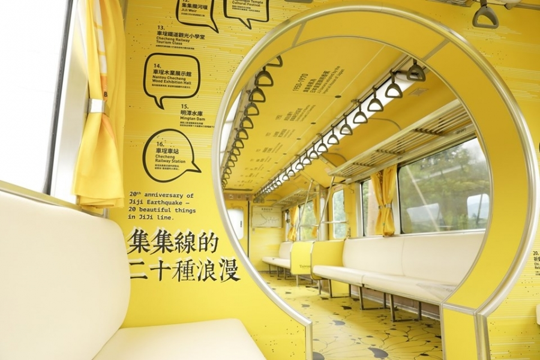

文章總表
熱門文章
誰來我家
關於創作者
集集小火車
Aug 23, 2019
<< 返回本月文章列表

10:45
集集小火車改變了！好漂亮！
披上溫暖「山蕉黃」！台鐵化身移動的美術館「集集彩繪列車」9月底登場
如上所述，台鐵化身移動的美術館「集集彩繪列車」，9月底即將登場。
結合在地的旅遊、產業與文化，讓新潮與古樸兼備，充份展現了極簡美學的特質。
想像中，彩繪的火車，在如畫的風景中，隆隆行駛，美好如歌。
浪漫繽紛的氣息，將在集集支線上，在通過水里故鄉的汽笛聲中，瀰漫飄揚。
許天亮 筆記
2019.8.23.